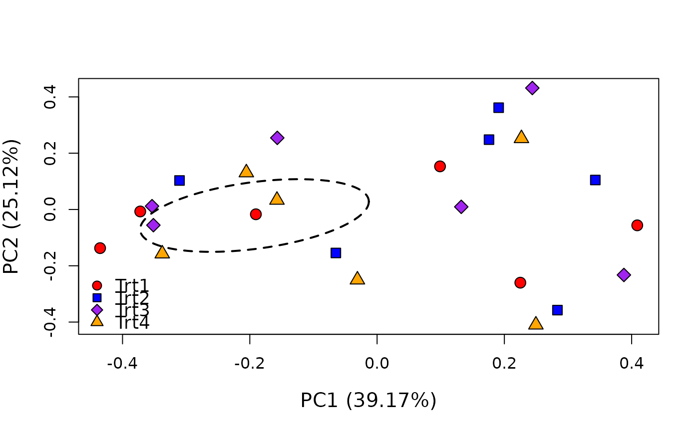
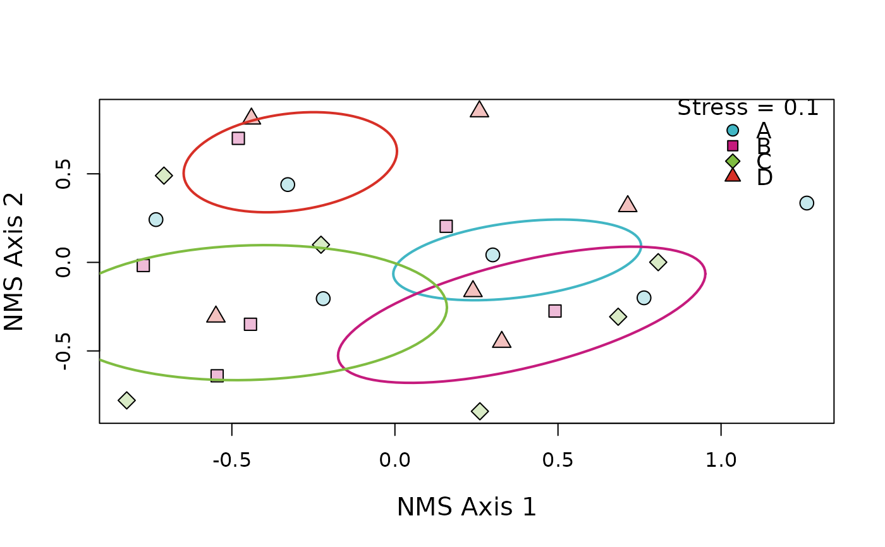

Produces a Nonmetric Multidimensional Scaling (NMS) or Principal Coordinate Analysis (PCoA) for up to 10 groups. Draws an ellipse around the standard deviation of the points in each group. By default, assigns a unique color (colorblind-safe) and point shape for each group. If the user supplies colors/shapes then the function can support more than 10 groups. For NMS ordinations, includes the stress as the legend title (see ?vegan::metaMDS for explanation of "stress"). For PCoA ordinations includes the percent variation explained parenthetically in the axis labels.
Arguments
- mod
(pcoa | monoMDS/metaMDS) object returned by
ape::pcoaorvegan::metaMDS- grps
(vector) vector of categorical groups for data. Must be same length as number of rows in original data object
- ...
additional arguments passed to
graphics::plot,graphics::points,scales::alpha,vegan::ordiellipse, orgraphics::legend. Open a GitHub Issue if function must support additional arguments
Examples
# \donttest{
# Use data from the vegan package
utils::data("varespec", package = 'vegan')
# Make some columns of known number of groups
treatment <- c(rep.int("Trt1", (nrow(varespec)/4)),
rep.int("Trt2", (nrow(varespec)/4)),
rep.int("Trt3", (nrow(varespec)/4)),
rep.int("Trt4", (nrow(varespec)/4)))
# And combine them into a single data object
data <- cbind(treatment, varespec)
# Get a distance matrix from the data
dist <- vegan::vegdist(varespec, method = 'kulczynski')
# Perform PCoA / NMS
pcoa_mod <- ape::pcoa(dist)
nms_mod <- vegan::metaMDS(data[-1], autotransform = FALSE, expand = FALSE, k = 2, try = 50)
#> Run 0 stress 0.1000211
#> Run 1 stress 0.160494
#> Run 2 stress 0.1000211
#> ... Procrustes: rmse 2.418569e-05 max resid 0.0001051768
#> ... Similar to previous best
#> Run 3 stress 0.173334
#> Run 4 stress 0.1000211
#> ... New best solution
#> ... Procrustes: rmse 4.052296e-06 max resid 1.763271e-05
#> ... Similar to previous best
#> Run 5 stress 0.1000211
#> ... Procrustes: rmse 5.817102e-07 max resid 2.50098e-06
#> ... Similar to previous best
#> Run 6 stress 0.1616352
#> Run 7 stress 0.1000211
#> ... Procrustes: rmse 3.830352e-07 max resid 1.366122e-06
#> ... Similar to previous best
#> Run 8 stress 0.1000211
#> ... Procrustes: rmse 8.692326e-06 max resid 3.779172e-05
#> ... Similar to previous best
#> Run 9 stress 0.1000211
#> ... Procrustes: rmse 1.426434e-06 max resid 6.135848e-06
#> ... Similar to previous best
#> Run 10 stress 0.1000211
#> ... Procrustes: rmse 2.061586e-06 max resid 8.946507e-06
#> ... Similar to previous best
#> Run 11 stress 0.1000211
#> ... Procrustes: rmse 9.422265e-06 max resid 4.095289e-05
#> ... Similar to previous best
#> Run 12 stress 0.1000211
#> ... Procrustes: rmse 2.74398e-05 max resid 0.0001180424
#> ... Similar to previous best
#> Run 13 stress 0.1613105
#> Run 14 stress 0.1616352
#> Run 15 stress 0.1532704
#> Run 16 stress 0.1000211
#> ... New best solution
#> ... Procrustes: rmse 5.073255e-06 max resid 2.188445e-05
#> ... Similar to previous best
#> Run 17 stress 0.1000211
#> ... Procrustes: rmse 4.585748e-06 max resid 1.96768e-05
#> ... Similar to previous best
#> Run 18 stress 0.1000211
#> ... Procrustes: rmse 5.191166e-06 max resid 2.179527e-05
#> ... Similar to previous best
#> Run 19 stress 0.1000211
#> ... New best solution
#> ... Procrustes: rmse 1.657658e-06 max resid 5.468007e-06
#> ... Similar to previous best
#> Run 20 stress 0.1000211
#> ... Procrustes: rmse 1.148052e-05 max resid 4.585103e-05
#> ... Similar to previous best
#> *** Best solution repeated 2 times
# Create PCoA ordination (with optional agruments)
ordination(mod = pcoa_mod, grps = data$treatment,
bg = c("red", "blue", "purple", "orange"),
lty = 2, col = "black")

# Create NMS ordination
ordination(mod = nms_mod, grps = data$treatment, alpha = 0.3,
x = "topright", legend = LETTERS[1:4])

# }